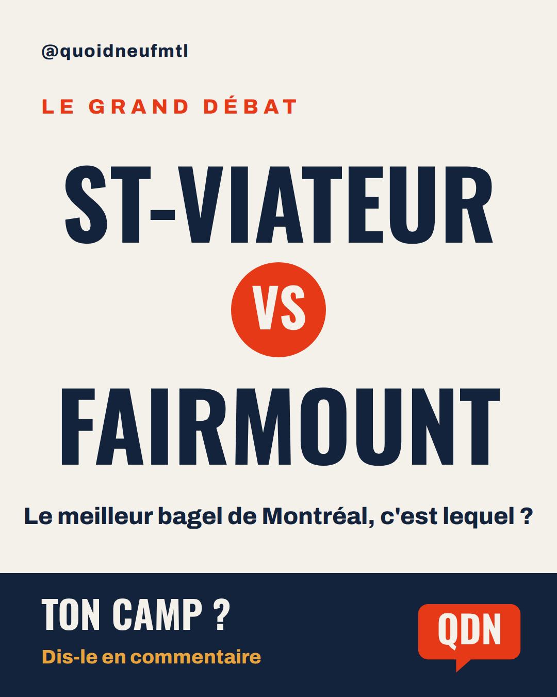
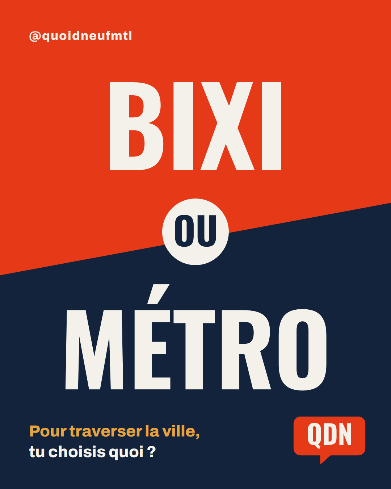
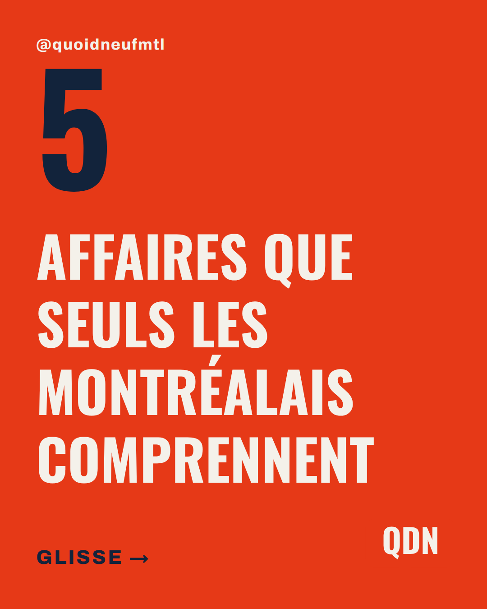

Tout ce qui se passe sur l'île : l'actu, les tendances, les sorties pis la bouffe. Une vidéo par jour sur Instagram, et les détails ici.
Trois questions qui divisent la ville. Votez sur Instagram.
Le meilleur bagel de Montréal, c'est lequel ?
Pour traverser la ville, t'es team quoi ?
Plateau, Verdun, Villeray… ou un autre ?



Les interruptions de service en temps réel, directement chez la STM.
Les prévisions officielles d'Environnement Canada, parce qu'à Montréal, ça change vite.
Les tendances de Montréal en 60 secondes, sur Instagram.